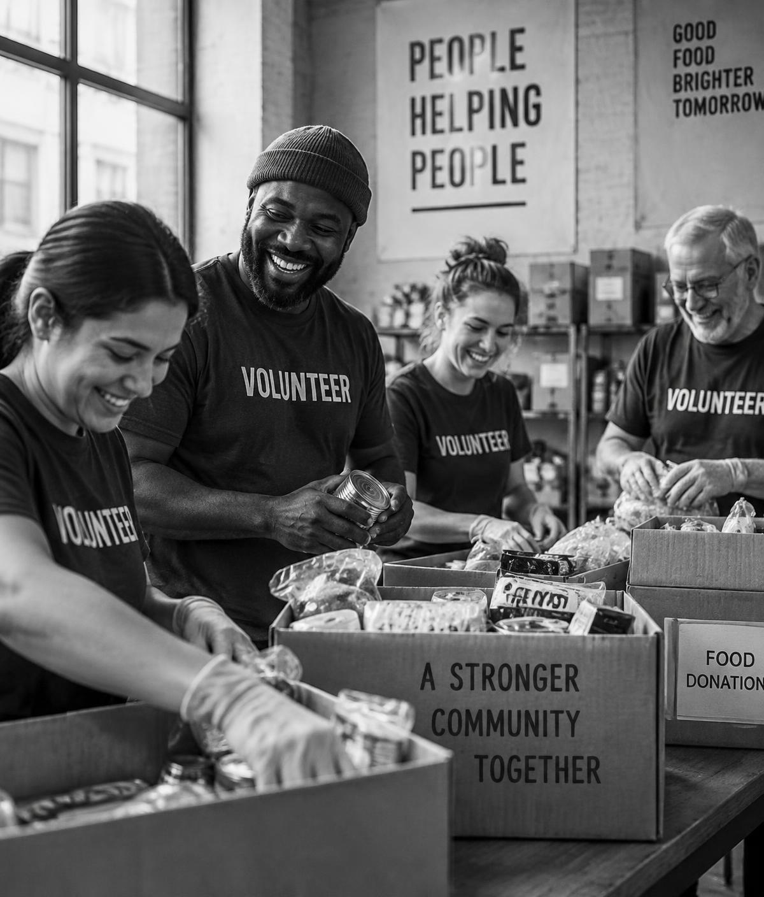
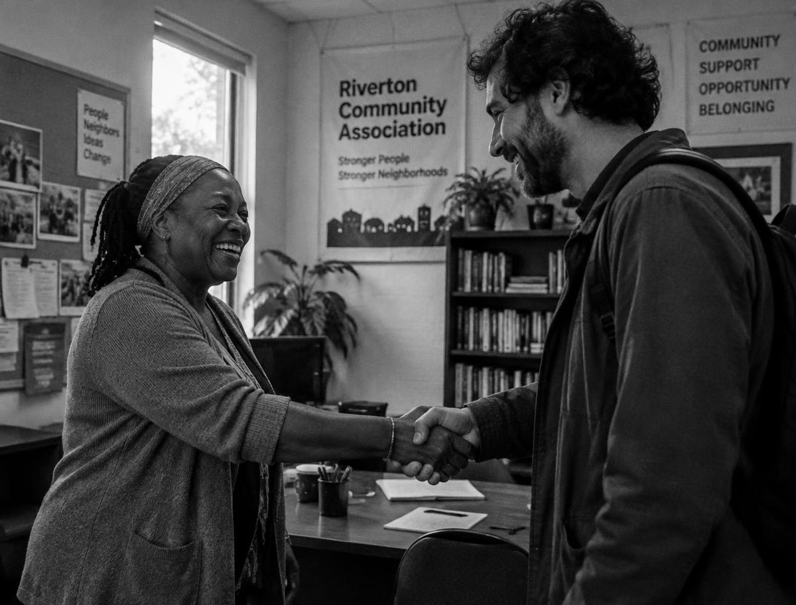

01
Trouve la mission qui te ressemble
Filtre par ville, domaine et disponibilité. La plateforme te recommande les missions les plus proches de ton profil.
CountMeIn met en relation les bénévoles et les associations. Inscription premier arrivé, premier servi : si la mission est complète, tu rejoins la liste d'attente automatique et tu es prévenu dès qu'une place se libère.

Trois étapes, aucune paperasse.
01
Filtre par ville, domaine et disponibilité. La plateforme te recommande les missions les plus proches de ton profil.
02
Premier arrivé, premier servi. Si la mission est complète, tu rejoins automatiquement la liste d'attente et tu es prévenu dès qu'une place se libère.
03
À la fin de la mission, l'association valide ta participation et t'envoie un certificat de bénévolat téléchargeable.
Des besoins concrets, publiés par nos associations partenaires.
Casablanca
Rabat
Tanger
Marrakech
1 248
missions publiées
8 630
bénévoles inscrits
312
associations partenaires

Trouvez des bénévoles motivés, sans tableurs ni appels sans fin. CountMeIn s'occupe des inscriptions, vous vous occupez du terrain.